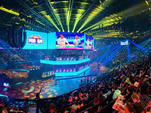

Daniel Pedersen Dalen 14.09.2023
Photo by Nick Statt / The Verge
paragraf 1
paragraf 2
De fleste idretter har hatt dopingskandaler. Vi skal ikke være naive og tenke at dette ikke finnes i e-sporten, sier Norges e-sportsforbund. Anne Tjøndal, Sosiolog ved Nord universitet stiller spørsmål til doping i e-sport.
- Det må på dagsorden i de ulike miljøene, spillene og innen forskningen, sier hun.
Frem til nå har temaet nærmest vært ikke-eksisterende i norsk og skandinavisk sammenheng.
En av årsakene til at det har vært mindre fokus på doping i e-sporten er fordi det er noe helt annet enn doping i den organiserte idretten, ifølge Tjønndal
I e-sporten handler prestasjon i større grad om konsentrasjon og oppfattelsesevne. De prestasjonsfremmende midlene som brukes i e-sporten er for eksempel legemidler som også brukes i behandling av ADHD.